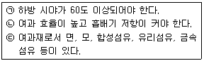

산업위생관리기사 (2005-03-20 기출문제)
1과목: 산업위생학개론
1. 인간공학이 현대사회에서 중요시 되고 있는 이유와 가장 거리가 먼 내용은?
- 근로자가 자동화 또는 자동제어된 생산공정에서 일하고 있기 때문이다.
- 인간존중의 차원에서 종전의 기계는 개선되어야 할 문제점을 많이 가지고 있기 때문이다.
- 자동화됨에 따라 근로자의 실직율과 인력활용영역의 감소가 문제화되고 있기 때문이다.
- 생산경쟁이 격심해짐에 따라 이 분야를 합리화시킴으로써 생산성을 증대시키고자 하기 때문이다.
(정답률: 알수없음)

2. [광물에 대하여]라는 저서를 남겼으며 광업에 관련된 유해성을 언급한 사람은?
- Hippocrates
- Agricola
- Pliny
- Ramazzini
(정답률: 알수없음)
3. 20세기 초 미국의 산업위생분야의 선구자로 활동하면서 납, 수은, 이황화탄소 등의 유해물질 취급사업장에서 질병이 발생된다는 사실을 밝혀낸 사람은?
- Percival Pott
- Bernardino Ramazzini
- Alice Hamilton
- George Baker
(정답률: 50%)
4. 산업피로의 종류에 관한 설명으로 알맞지 않은 것은?
- 국소피로와 전신피로는 피로를 나타내는 신체의 부위가 어느정도인지에 따라 상대적으로 구분된다.
- 보통피로는 하루 저녁 잠을 잘자면 완전히 회복될 수 있다.
- 정신적 피로나 육체적 피로가 각각 단독으로 생기는 일은 거의 없다.
- 곤비는 과로의 축적으로 단기간 휴식으로 회복될 수 있다.
(정답률: 알수없음)
5. 요통 발생에 관여하는 주된 요인과 가장 거리가 먼 것은?
- 작업습관과 개인적인 생활태도
- 작업빈도, 물체의 위치와 무게 및 크기 등과 같은 물리적 환경요인
- 근로자의 육체적 조건
- 과격한 일시적인 충격
(정답률: 50%)
6. 재해의 원인이 될 수 있는 불안전한 행위가 아닌 것은?
- 주변환경에 대한 부주의
- 불안전한 자세
- 작업속도의 저속
- 안전확인 경고의 미비
(정답률: 알수없음)
7. 신체적결함에 따른 부적합한 작업을 짝지은 것으로 가장 거리가 먼 것은?
- 빈혈증 - 유기용제 취급작업
- 심계항진 - 정밀작업
- 당뇨증 - 외상받기 쉬운 작업
- 간기능장해 - 화학공업
(정답률: 37%)
8. 산업위생의 기본적인 과제를 가장 알맞게 표현한 것은?
- 작업환경에 의한 정신적 영향과 적합한 환경의 연구
- 작업능력의 신장과 저하에 따른 작업조건의 연구
- 작업장에서 배출된 유해물질이 대기오염에 미치는 영향
- 노동력 재생산과 사회심리적 조건에 관한 연구
(정답률: 알수없음)
9. Heinrich는 산업재해를 분석한 결과 중대사고(주요재해) 한 건당 경미한 사고(경미재해)는 몇 건 발생한다고 분석 하였는가?
- 10건
- 29건
- 39건
- 50건
(정답률: 알수없음)
10. 젊은 근로자에 있어서 약한 손(오른손 잡이의 경우 왼손)의 힘은 평균 45kp라고 한다. 이러한 근로자가 무게 8kg인 상자를 두손으로 들어올릴 경우 작업강도(%MS)는?
- 17.8%
- 8.9%
- 4.4%
- 2.3%
(정답률: 알수없음)
11. 교대제를 기업에서 채택되고 있는 이유와 가장 거리가 먼 것은?
- 의료, 방송등 공공사업에서 국민생활과 이용자의 편의를 위하여
- 화학공업, 석유정제 등 생산과정이 주야로 연속되지 않으면 안되는 경우
- 섬유공업, 건설사업에서 근로자의 고용기회의 확대를 위하여
- 기계공업, 방직공업등 시설투자의 상각을 조속히 달성코자 생산설비를 완전가동 하고자 하는 경우
(정답률: 알수없음)
12. 인간공학은 공장의 기계 시설에 있어 준비단계, 선택단계 검토단계의 순서로 실제 적용하게 된다. 다음중 준비단계에 속하는 것은?
- 각 작업을 수행하는데 필요한 직종간의 연결성을 파악함
- 인간-기계관계의 구성인자의 특성을 명확히 알아냄
- 공장설계에 있어서의 기능적특성, 제한점을 고려함
- 공장설계에 있어서 경제적효율을 고려하여 세부설계에 반영함
(정답률: 46%)
13. 인간공학에서 고려해야 할 인간의 특성과 가장 거리가 먼 것은?
- 인간의 습성
- 집단에 대한 적응능력
- 인간의 지적, 감상적 조화성
- 신체의 크기와 작업환경
(정답률: 알수없음)
14. 연평균 근로자수가 5,000인이 근무하는 산업장에서 1년에 250명의 재해자가 발생하였다면 연천인율은?
- 35명
- 40명
- 45명
- 50명
(정답률: 54%)
15. NIOSH가 적용할 수 있다고 정한 중량물취급작업에 대한 기준과 가장 거리가 먼 것은?
- 박스(box)인 경우는 손잡이가 있어야 한다.
- 빠른 속도로 들어올리는 작업을 기준으로 한다.
- 물체의 폭이 75cm이하로서 두 손을 적당히 벌리고 작업할 수 있어야 한다.
- 작업장 내의 온도가 적절해야 한다.
(정답률: 알수없음)
16. 교대제를 채택한 경우에 휴식과 수면에 중점을 두고 근무일수, 작업시간, 교대순서, 휴일수등을 정하여야 한다. 다음중 바람직한 교대제를 알맞게 설명한 것은?
- 야간근무의 연속은 3-5일 정도가 적당하다.
- 2교대면 최소 2조의 정원을, 3교대면 최소 3조로 편성한다.
- 야간근무시의 가면(假眠)은 반드시 필요하다.
- 야근후 다음반으로 가는 간격은 최고 48시간 이내로 한다.
(정답률: 65%)
17. 작업적성을 알아보기 위한 생리적기능검사와 가장 거리가 먼 검사는?
- 감각기능검사
- 체력검사
- 지각동작기능검사
- 심폐기능검사
(정답률: 알수없음)
18. 앉아서 운전작업을 하는 사람들의 주의사항을 잘못 설명한 것은?
- 방석과 수건을 말아서 허리에 받쳐 최대한 척추가 자연곡선을 유지하도록 한다.
- 운전대를 잡고 있을 때에는 최대한 앞으로 기울이는 것이 좋다.
- 차나 트랙터를 타고 내릴 때 몸을 회전해서는 안된다
- 큰 트럭에서 내릴 때는 뛰어내려서는 안된다.
(정답률: 100%)
19. 재해통계 지수 중 '강도율'을 수식으로 알맞게 표현한 것은?
- (재해자수/연 근로시간수) ×1000
- (재해자수/연 작업 근로자수) ×1000
- (손실작업일수/연 근로시간수) ×1000
- (손실작업일수/연 작업 근로자수) ×1000
(정답률: 알수없음)
20. 최대 작업역이란 무엇인가?
- 상지를 뻗쳐서 닿는 작업영역
- 전박을 뻗쳐서 닿는 작업영역
- 사지를 뻗쳐서 닿는 작업영역
- 어깨를 뻗쳐서 닿는 작업영역
(정답률: 64%)
2과목: 작업위생측정 및 평가
21. 유량, 측정시간, 회수율 및 분석 등에 의한 오차가 각각 10%, 5%, 10% 및 5% 일 때의 누적오차와 유량에 의한 오차를 5%로 감소(측정시간,회수율 및 분석등에 의한 오차율은 같음)시켰을 때 누적오차와의 차이는?
- 약 1.3%
- 약 2.6%
- 약 3.4%
- 약 4.1%
(정답률: 50%)
22. 분석 및 자료처리에 적용되는 용어들에 관한 설명이 틀린것은?
- 검출한계는 공시료와 통계적으로 동일하게 분석될 수 있는 가장 낮은 농도를 말한다.
- 검출한계는 분석기기가 검출할 수 있는 가장 작은 양을 말한다.
- 정량한계는 분석결과가 신뢰성을 가질 수 있는 양을 말한다.
- 정량한계 추정치는 공시료의 값을 이용할 수 없다면 검량선의 방정식으로부터 구할 수 있다.
(정답률: 알수없음)
23. 가스상 물질을 액체에 채취할 경우 채취효율을 높이기 위한 방법에 해당되지 않는 것은?
- 기포와 액체의 접촉면적을 크게 한다.
- 기포의 체류시간을 길게 한다.
- 포집액의 온도를 낮춘다.
- 액체의 교반을 약하게 한다.
(정답률: 17%)
24. 석면의 측정방법에 관한 설명으로 알맞지 않는 것은?
- 위상차현미경법은 막 여과지에 시료를 채취한 후 전처리하여 위상차현미경으로 분석한다.
- 위상차현미경법은 다른 방법에 비해 간편하며 석면의 감별이 쉽다.
- 편광현미경법은 석면광물이 가지는 고유한 빛의 편광성을 이용한다,
- 편광현미경법은 고형시료분석에 사용하며 석면을 감별 분석할 수 있다.
(정답률: 알수없음)
25. 유기용제 채취시 적정한 공기 채취량을 선정하는데 고려하여야 하는 조건과 가장 거리가 먼 것은?
- 공기중의 예상농도
- 채취 유량
- 채취시료수
- 분석기기의 최저 정량한계
(정답률: 43%)
26. 다음중 자장 측정기가 아닌 것은?
- Gausmeter Electronic 자속계
- Fluxgate meter NMR계
- SQUID 자속계
- Light fiber 자속계
(정답률: 알수없음)
27. '1차표준기구'와 가장 거리가 먼 것은?
- Wet-test meter
- Spirometer
- Gas meter
- Pitot tube
(정답률: 알수없음)
28. 어떤 작업장 공기중에 Acetone(TLV=10ppm) 10ppm, Benzene(TLV=50ppm)15ppm, Xylene (TLV=25ppm) 20ppm으로 오염되어 있다면 이 작업장의 혼합물 허용농도는? (단, 상가작용 기준)
- 약 16 ppm
- 약 22 ppm
- 약 32 ppm
- 약 38 ppm
(정답률: 알수없음)
29. 순간시료채취방법에 관한 내용으로 틀린 것은?
- 진공 플라스크: 재질은 유리, 폴리프로필렌, 스테인레스 스틸이 사용되며 크기는 200-1000㎖ 정도이다.
- 액체 치환병: 액체로는 물이 가장 많이 사용되는데 분석대상가스가 액체에 불용성이며 반응성이 없어야 한다.
- 시료채취 백: 회수율이 100%에 가까우며 정밀도와 정확도가 높은 것이 장점이다.
- 주사기: 가격이 저렴하고 사용하기 간편한 잇점이 있다.
(정답률: 알수없음)
30. 어느 옥외 작업장의 온도를 측정한 결과, 건구온도 32℃, 자연습구온도 25℃, 흑구온도 38℃를 얻었다. 이 작업장의 옥외 WBGT는? (단, 태양광선이 내리쬐는 장소)
- 28.3℃
- 29.5℃
- 31.7℃
- 33.1℃
(정답률: 알수없음)
31. 흡광광도법에서 흡광도를 구하는 법칙으로 가장 적절한 것은?
- Lambert-Beer 법칙
- Newton 법칙
- Faraday의 법칙
- Boyle의 법칙
(정답률: 91%)
32. 흡광광도계에서 빛의 강도가 i0 인 단색광이 어떤 시료용액을 통과할 때 그 빛의 90%가 흡수될 경우, 흡광도는?
- 0.8
- 0.9
- 1.0
- 1.2
(정답률: 알수없음)
33. 작업환경의 '습구온도'를 측정하는 기기와 측정시간을 알맞게 나타낸 것은?
- 0.1도 간격의 눈금이 있는 아스만통풍건습계 - 5분 이상
- 0.1도 간격의 눈금이 있는 아스만통풍건습계 - 25분 이상
- 0.5도 간격의 눈금이 있는 아스만통풍건습계 - 5분 이상
- 0.5도 간격의 눈금이 있는 아스만통풍건습계 - 25분 이상
(정답률: 알수없음)
34. 어느 작업장에서 Xylene 의 농도를 측정한 결과, 23.0ppm, 21.8ppm, 22.6ppm, 24.3 ppm, 22.3 ppm을 각각 얻었다. 표준편차는? (단, N=5 )
- 0.96
- 0.93
- 0.89
- 0.85
(정답률: 알수없음)
35. 작업환경측정 단위로 알맞지 않는 것은?
- 미스트, 흄등의 농도는 ppm, mg/m3으로 표시한다.
- 소음수준의 측정단위는 dB(A)로 표시한다.
- 석면의 농도표시는 섬유개수(개수/m3)로 표시한다.
- 고온(복사열포함)은 습구흑구온도지수를 구하여 섭씨온도(℃)로 표시한다.
(정답률: 알수없음)
36. 허용농도가 50ppm인 트리클로로에틸렌을 취급하는 작업장에 하루 10시간 근무한다면 그 조건에서의 허용농도치는? (단, Brief-Scala보정방법 기준)
- 47ppm
- 42ppm
- 39ppm
- 35ppm
(정답률: 70%)
37. 열, 화학물질, 압력 등에 강한 특징이 있어 석탄건류나 증류 등의 고열공정에서 발생하는 다핵방향족탄화수소를 채취하는데 이용되는 막여과지는?
- 은 막여과지
- PTFE 막여과지
- PVC 막여과지
- MCE 막여과지
(정답률: 알수없음)
38. 직독식먼지 측정기로 광산란방식을 이용한 것은?
- 디지털 분진계
- 피에조벨런스
- β -gauge계
- 유리섬유여과분진계
(정답률: 알수없음)
39. 다음 중 검지관의 단점과 가장 거리가 먼 것은?
- 민감도가 낮다.
- 특이도가 낮다.
- 밀폐공간에서 산소부족, 폭발성 가스로 인한 안전이 문제가 될 때는 사용하기 어렵다.
- 색변화가 선명하지 않아 주관적으로 읽을 수 있어 판독자에 따른 변이가 심하다.
(정답률: 50%)
40. 음압이 10배 증가하면 음압 수준은 몇 dB이 증가하는가?
- 10dB
- 20dB
- 30dB
- 40dB
(정답률: 알수없음)
3과목: 작업환경관리대책
41. 용융로에 설치된 레시버식 캐누피형 후드의 열상승 기류량이 20m3/min 이고 누입한계 유량비 KL이 2.0 일 때 소요 송풍량(m3/min)은 ? (단, 표준상태기준, 후드주위에 난류영향은 없다.)
- 40
- 60
- 80
- 100
(정답률: 25%)
42. 레시버식 캐노피형 후드의 필요송풍량을 산정하기 위해서는 유해기류의 발생량을 활용한 유량비법이 사용된다. 이때 고려하지 않아도 되는 항목은?
- 제어속도
- 열상승기류량
- 열원과 후드의 구조적 특성
- 유도기류, 난기류
(정답률: 20%)
43. 도금조와 같이 오염물질 발생원의 개방면적이 큰 작업공정에 주로 많이 사용하여 포집효율을 증가시키면서 필요 유량을 대폭 감소시킬 수 있는 장점이 있는 후드는?
- 그리드형
- 캐노피형
- 드래프트 챔버형
- 푸쉬-풀형
(정답률: 64%)
44. 어떤 작업장의 음압수준이 100dB(A)이고 근로자가 NRR이 17인 귀마개를 착용하고 있다면 차음효과는?
- 5dB(A)
- 10dB(A)
- 15dB(A)
- 20dB(A)
(정답률: 알수없음)
45. 주물사나 고온가스 등을 취급하는 공정에 환기시설을 설치하고자 한다. 덕트의 재료로 가장 적당한 것은?
- 아연도금 강판
- 중질 콘크리트
- 스테인레스 강판
- 흑피 강판
(정답률: 알수없음)
46. 국소환기 시스템의 새우등 곡관의 설계기준에 있어서 닥트 직경이 150㎜ 이하인 경우에 곡관을 몇 개 이상 사용하여 연결하게 하는가?
- 6개
- 5개
- 3개
- 2개
(정답률: 알수없음)
47. 아래 설명중 정압의 작용방향에 대한 올바른 설명은?
- 모든 방향에 똑같이 작용한다.
- 흐름의 방향과 평행한다.
- 흐름의 방향과 반대방향으로 작용한다.
- 흐름의 방향의 위에서 아래로 작용한다.
(정답률: 알수없음)
48. 국소환기시설 설계(총압력손실계산)에 있어 '저항조절평형법'의 장점으로 알맞지 않는 것은?
- 장래의 변경이나 확장에 대해 다소 유연성이 크다.
- 최소 설계송풍량으로 평형유지가 가능하다.
- 공장내부 작업공정에 따라 적절한 덕트 위치 변경이 가능하다.
- 설치 후 시설평형을 취하는 작업이 간단하다.
(정답률: 알수없음)
49. 방진 마스크의 적절한 구비조건만으로 짝지은 것은?

- ㉠㉡
- ㉡㉢
- ㉠㉢
- ㉠㉡㉢
(정답률: 64%)
50. 송풍기의 동력과 회전수와의 관계로 알맞는 것은?
- 동력은 회전수와 비례한다.
- 동력은 회전수의 제곱에 비례한다.
- 동력은 회전수의 세제곱에 비례한다.
- 동력은 회전수의 네제곱에 비례한다.
(정답률: 알수없음)
51. 유해작업환경에 대한 개선 대책 중, 대치(substitution) 방법에 대한 설명으로 틀린 것은?
- 아소염료의 합성에서 원료로 디클로로벤지딘을 사용하던 것을 벤지딘으로 바꾼다.
- 분체의 원료는 입자가 큰 것으로 바꾼다.
- 유기합성용매로 벤젠을 사용하던 것을 지방족 산화물의 휘발유계 용매로 전환한다.
- 금속제품 도장용으로 유기용제를 수용성 도료로 전환한다.
(정답률: 알수없음)
52. 점진적으로 확대 또는 축소하는 원형관의 길이는 확대부 직경과 축소부 직경차의 몇 배 이상이라야 하는가?
- 2배
- 3배
- 4배
- 5배
(정답률: 8%)
53. 공기중에 아세톤이 1,000ppm 존재하고 있다. 아세톤과 공기의 혼합물 유효비중은 얼마인가?(단, 아세톤 증기비중은 2.0, 공기비중은 1.0)
- 1.001
- 1.004
- 1.04
- 1.02
(정답률: 알수없음)
54. 건조로에서 접착제를 건조 할 때 톨루엔(비중 0.87, 분자량 92)이 1시간에 2 kg씩 증발한다. 이 때 톨루엔의 LEL은 1.3 %이며, LEL의 20% 이하를 농도로 유지하고자 한다. 화재 또는 폭발방지를 위해서 필요한 환기량은? (단, 온도는 120℃ 이상이며 실제 온도보정은 생략한다)
- 약 290 m3/h
- 약 370 m3/h
- 약 460 m3/h
- 약 580 m3/h
(정답률: 알수없음)
55. 건강을 위한 전체환기량 계산에 있어서 필요 환기량을 넉넉하게 하기 위해 무차원 여유계수 K를 도입한다. K값에 대한 설명과 가장 거리가 먼 것은?
- K값은 불안정 혼합을 보정하기 위한 안전계수이다.
- K값의 결정에는 유해물질의 허용기준 TLV를 고려한다
- K값의 결정에는 환기방식의 효율성을 고려한다.
- K값은 유해물질의 발생률, 작업시간과의 관계가 일정하다.
(정답률: 알수없음)
56. 송풍기의 풍량 Qf는 200(m3/min)이고 풍정압 Psf는 150(㎜H2O)이다. 송풍기의 효율이 0.8이라면 소요동력(㎾)은?
- 약 4(㎾)
- 약 6(㎾)
- 약 8(㎾)
- 약 10(㎾)
(정답률: 알수없음)
57. 분압이 1.5㎜Hg인 물질이 표준상태의 공기중에서 증발하여 도달할 수 있는 최고 농도(ppm)는?
- 500
- 1000
- 1500
- 2000
(정답률: 40%)
58. 주관에 45°로 분지관이 연결되어 있다. 주관과 분지관의 반송속도는 모두 18m/s이고, 주관의 압력손실계수는 0.2이며, 분지관의 압력손실계수는 0.28이다. 주관과 분지관의 합류에 의한 압력손실은? (단, 공기밀도는 1.2Kg/m3 기준 )
- 5.6mmH2O
- 8.6mmH2O
- 9.5mmH2O
- 10.5mmH2O
(정답률: 알수없음)
59. 차음보호구에 대한 다음의 설명사항 중에서 알맞지 않은 것은?
- Ear plug는 외청도가 이상이 없는 경우에만 사용이 가능하다.
- Ear plug의 차음효과는 일반적으로 Ear muff보다 좋고, 개인차가 적다.
- Ear muff는 일반적으로 저음의 차음효과는 20㏈, 고음역의 차음효과는 45㏈이상을 갖는다.
- Ear muff는 Ear plug에 비하여 고온 작업장에서 착용하기가 어렵다.
(정답률: 54%)
60. 1기압 상태의 직경이 20㎝인 덕트에서 동점성계수가 2×10-4m2/sec 인 기체가 5m/sec로 흐른다. 이 때의 레이놀드수는?
- 5,000
- 50,000
- 500,000
- 5000,000
(정답률: 알수없음)
4과목: 물리적유해인자관리
61. 다음중 진동의 종류와 가장 거리가 먼 것은?
- 정현진동
- 동현진동
- 충격진동
- 감쇠진동
(정답률: 60%)
62. 그라인딩 작업을 하는 작업장에서 발생되는 90dB(A)의 소음원이 3개 있다. 이 작업장의 전체 소음은?
- 약 93.1dB(A)
- 약 93.8dB(A)
- 약 94.1dB(A)
- 약 94.8dB(A)
(정답률: 46%)
63. 전리방사선인 α입자에 관한 설명으로 틀린 것은?
- 핵에서 방출되는 입자로서 헬리움원자의 핵과 같이 두개의 양자와 두개의 중성자로 구성되어 있다
- 질량과 하전여부에 따라 그 위험성이 결정된다
- 동위원소의 흡입, 섭취에 따른 내부조사보다는 외부조사로 건강상의 위해가 온다
- 투과력은 약하나 전리작용은 강하다
(정답률: 알수없음)
64. 한랭환경과 건강장해에 관한 설명으로 알맞지 않는 것은?
- 전신체온강하는 단시간의 한랭폭로에 따른 일시적 체온상실에 따라 발생하는 중증장해에 속한다.
- 동상에 대한 저항은 개인에 따라 차이가 있으나 발가락은 12℃에서 시린 느낌이 생기고 6℃에서는 아픔을 느낀다.
- 참호족과 침수족은 지속적인 국소의 산소결핍 때문이다.
- 한랭환경에서 생체열용량의 변화는 대사에 의한 체열생산에서, 증발, 복사, 대류에 의한 체열방산을 뺀 것과 같다.
(정답률: 알수없음)
65. 작업장내 음원에서 2watt의 소리 에너지를 발생시킬 때 음원의 파워레벨(PWL)은?
- 110dB
- 116dB
- 120dB
- 123dB
(정답률: 67%)
66. 작업환경내의 소음이란 음원에서의 거리가 2배로 될 때 음압레벨은 점음원인 경우 어느 정도 감쇠하겠는가? (단, 자유음장 기준)
- 2dB
- 3dB
- 4dB
- 6dB
(정답률: 알수없음)
67. 불안정한 정신상태에 이르고 취한 것과 같으며 당시의 기억 상실, 전신탈력, 체온상승, 호흡장해, 청색증이 유발되는 공기중 산소농도의 범위로 가장 적절한 것은?(단, 동맥혈산소 포화도(%)= 74 ‾ 87 )
- 14 ‾ 16 %
- 9 ‾ 14 %
- 6 ‾ 9 %
- 4 ‾ 6 %
(정답률: 알수없음)
68. 3.5 microbar를 음압레벨(음압도)로 전환한 값으로 적절한 것은?
- 65dB
- 75dB
- 85dB
- 95dB
(정답률: 알수없음)
69. 공기의 온도가 20℃에서 500Hz 음의 파장은?
- 30㎝
- 50㎝
- 70㎝
- 90㎝
(정답률: 7%)
70. 적외선에 관한 설명으로 거리가 먼 것은?
- 적외선의 파장범위는 1000 - 10,000Å이며 열을 방출하는 가장 중요한 파장영역이다.
- 적외선은 쉽게 식별이 된다는 점에서 자외선보다는 관리가 용이하다.
- 태양으로부터 방출되는 복사에너지의 52%는 적외선이며 지구기온의 근원이라 할 수 있다.
- 적외선 피폭의 허용한계는 적외선의 파장에 따라서 허용조사량이 달라진다.
(정답률: 알수없음)
71. Radium이 붕괴하는 원자의 수를 기초로 해서 정하여 졌으며 1초간에 3.7×1010개의 원자 붕괴가 일어나는 방사성 물질의 양을 한 단위로 하는 전리방사선 단위는?
- 램(Rem)
- 렌트겐(Roentgen)
- 퀴리(Ci)
- 리드(Rad)
(정답률: 알수없음)
72. 레이저광의 폭로량을 평가하는데 대한 설명이 잘못된 것은?
- 조사량의 서한도는 1cm2 면적에 대한 평균치이다.
- 레이저광은 직사광이고 형광등, 백열등은 확산광이다
- 각막 표면에서의 조사량(J/cm2) 또는 폭로량(W/cm2)을 측정한다.
- 레이저광에 대한 눈의 허용량은 그 파장에 따라 수정되어야 한다.
(정답률: 알수없음)
73. 광원으로부터의 밝기에 관한 설명으로 틀린 것은?
- 루멘은 1촉광의 광원으로 부터 한 단위입체각으로 나가는 광속의 단위이다
- 광원밝기는 조사평면과 수직평면이 이루는 각(cosine)에 비례한다.
- 밝기는 광원으로 부터 거리의 제곱에 반비례한다.
- [1촉광 = 4π루멘]으로 나타낼 수 있다.
(정답률: 알수없음)
74. 전리방사선에 대한 감수성이 큰 신체조직과 가장 거리가 먼 곳은?
- 세포핵 분열이 계속적인 조직
- 증식과 재생기전이 큰 조직
- 신경조직, 골, 근육등 조밀한 조직
- 형태와 기능이 미완성된 조직
(정답률: 알수없음)
75. 다음 중 열피로 치료의 착안점으로 가장 적절한 것은?
- 수분 및 NaCl 보충
- 단백질, 탄수화물 및 비타민보충
- 휴식, 5% 포도당 공급
- 체온의 급속한 냉각
(정답률: 알수없음)
76. 고열환경에 노출될 때 혈관운동장해가 일어나 정맥혈이 말초혈관에 저류되고 심박출량 부족으로 초래되는 순환 부전 특히 대뇌피질의 혈류량 부족이 주원인으로 저혈압, 뇌의 산소부족으로 실신하거나 현기증을 느끼는 것은?
- 열성혈압증(heat rash)
- 열사병(heat stroke)
- 열부종(heat edema)
- 열허탈증(heat collapse)
(정답률: 50%)
77. 다음 중 잠함병(감압병)의 직접적인 원인은?
- 체액 및 지방조직에 질소기포 증가
- 혈중의 CO2 농도 증가
- 체액 및 지방조직에 O2 농도 증가
- 체액 및 지방조직에 CO 농도 증가
(정답률: 알수없음)
78. 이상기압의 인체작용으로 2차적인 가압현상과 가장 거리가 먼 것은?(단, 화학적 장해)
- 질소의 작용
- 산소중독
- 이산화탄소의 작용
- 일산화탄소의 작용
(정답률: 59%)
79. 전신진동이 생체에 주는 영향에 관한 설명으로 알맞지 않는 것은?
- 전신진동의 영향이나 장해는 중추신경계 특히 내분비계통의 만성작용에 관해 잘 알려져있다.
- 말초혈관이 수축되고 혈압상승,맥박증가를 보이며 피부 전기저항의 저하도 나타낸다.
- 산소소비량은 전신진동으로 증가되고 폐환기도 촉진된다.
- 두부와 견부는 20-30Hz진동에 공명하며 안구는 60-90Hz진동에 공명한다.
(정답률: 알수없음)
80. 비전리방사선의 종류중 옥외작업을 하면서 콜타르의 유도체, 벤조피렌, 안트라센 화합물과 상호작용하여 피부암을 유발시키는 것으로 알려진 비전리 방사선은?
- 마이크로파
- 자외선
- 적외선
- 레이저광선
(정답률: 90%)
5과목: 산업독성학
81. 알러지성 접촉피부염을 흔히 일으키는 금속류와 가장 거리가 먼 것은?
- 납
- 크롬
- 니켈
- 베릴륨
(정답률: 알수없음)
82. 상대적 독성(수치는 독성의 크기)이 2 + 0 → 10 의 형태로 나타난 화학적 상호작용으로 알맞는 것은?
- additive
- potentiation
- synergistic
- antagonism
(정답률: 50%)
83. 독성물질의 생체전환에 관한 설명으로 틀린 것은?
- 생체전환은 독성물질이나 약물의 제거에 대한 첫 번째 기전이며 1상반응과 2상반응으로 구분된다
- 제1상반응은 분해반응이나 이화반응이다
- 제2상반응은 제1상반응이 불가능한 물질에 대한 추가적 축합반응이다
- 생체변화의 기전은 기존의 화합물보다 인체에서 제거하기 쉬운 대사물질로 변화시키는 것이다
(정답률: 알수없음)
84. 할로겐화 탄화수소의 독작용 중 관련이 적은 것은?
- 중독성이다.
- 단발성이다 .
- 중추신경계의 억제작용이 있다.
- 점막에 대한 중등도의 자극효과가 있다.
(정답률: 16%)
85. 중추신경계 억제작용이 큰 유기화학물질의 순서로 알맞는 것은?
- 유기산＜ 알칸＜ 알켄＜ 알코올＜ 에스테르＜ 에테르
- 알칸＜ 알켄＜ 알코올＜ 유기산＜ 에스테르＜ 에테르
- 유기산＜ 에스테르＜ 에테르＜ 알칸＜ 알켄＜ 알코올
- 알코올＜ 유기산＜ 에스테르＜ 에테르＜ 알칸＜ 알켄
(정답률: 알수없음)
86. 3가 및 6가의 크롬은 인체 독성과 관련된 화합물이다. 이들의 특성에 관한 내용으로 옳지 않는 것은?
- 3가 크롬은 피부 흡수가 어려우나 6가 크롬은 쉽게 피부를 통과한다.
- 산업장의 폭로 관점에서 보면 3가 크롬이 더 해롭다.
- 세포막을 통과한 6가 크롬은 세포내에서 수분내지 수시간만에 발암성을 가진 3가 형태로 환원된다.
- 6가에서 3가로의 환원이 세포질에서 일어나면 독성이 적으나 DNA의 근위부에서 일어나면 강한 변이원성을 나타낸다.
(정답률: 50%)
87. 유해물질에 대한 허용농도중 [어떠한 경우에도 초과 되어서는 안되는 농도]를 나타내는 것은?
- TLV
- TLV - TWA
- TLV - C
- TLV - STEL
(정답률: 알수없음)
88. 벤젠에 의한 조혈기관의 장해는 벤젠의 대사산물 때문이며, 이 대사산물을 벤젠의 생물학적 노출 지표로 이용한다. 벤젠의 생물학적 노출 지표로 이용되는 것은?
- 마뇨산
- 스티리엔
- 벤지딘
- 페놀
(정답률: 알수없음)
89. 고농도로 폭로되면 중추신경계 장해외에 간장이나 신장에 장해가 일어나 황달, 단백뇨, 혈뇨의 증상을 보이는 할로겐화 탄화수소로 적절한 것은?
- 사염화탄소
- 벤젠
- 톨루엔
- 파라니트로클로로벤젠
(정답률: 알수없음)
90. 화학적 유해물질을 생리적 작용에 의한 분류시 피부 및 호흡기 점막에 작용하여 이를 부식하거나 수포를 형성하고 고농도인 때는 호흡이 정지되는 것은?
- 질식제
- 전신중독제
- 마취제와 진정제
- 자극제
(정답률: 알수없음)
91. 유해물질이 인체에 미치는 영향을 결정하는 인자와 가장 거리가 먼 것은?
- 유해물질의 농도
- 유해물질에 폭로되는 시간
- 유해물질의 독립성
- 개인의 감수성
(정답률: 알수없음)
92. 수은 중독에 관하여 기술한 것 중 옳지 않은 것은?
- 무기수은 화합물로는 질산수은, 승홍, 감홍 등이 있으며 철, 니켈, 알루미늄, 백금이외에 대부분의 금속과 화합하여 아말감을 만든다.
- 유기수은 화합물로서는 아릴수은 화합물과 알킬수은 화합물이 있다.
- 수은은 상온에서 액체상태로 존재하는 금속이다.
- 무기수은 화합물의 독성은 알킬수은 화합물의 독성보다 훨씬 강하다.
(정답률: 알수없음)
93. 근로자의 유해물질 노출 및 흡수 정도를 종합적으로 평가하는 데는 생물학적 측정이 필요하다. 또한 유해물질의 배출 및 축적되는 속도에 따라 시료 채취시기를 적절히 정해야 하는데, 다음 중 시료채취 시기에 제한을 가장 작게 받는 것은?
- 호기중 벤젠
- 소변중 총 페놀
- 소변중 납
- 혈중 총 무기수은
(정답률: 알수없음)
94. 급성중독자에게 활성탄과 하제를 투여하고 구토를 유발시킨후 BAL을 투여하는 치료를 행하는 유해물질로 가장 적절한 것은?
- 납(Pb)
- 크롬(Cr)
- 카드뮴(Cd)
- 비소(As)
(정답률: 알수없음)
95. 화학물질의 상호작용인 길항작용중 분배적 길항작용에 대하여 가장 적절히 설명한 것은?
- 동일한 생리적 기능에 길항작용을 나타내는 경우
- 두 화학물질이 반응하여 저독성의 물질을 형성하는 경우
- 물질의 흡수, 대사등에 영향을 미쳐 표적기관내 축적기간 혹은 농도가 저하되는 경우
- 두 화학물질이 같은 수용체에 결합하여 독성이 저하되는 경우
(정답률: 알수없음)
96. LD50은 유해물질의 작용범위를 결정하는 예비 독성검사에서 얻은 용량-반응곡선(dose-response curve)으로 부터 구한다. 다음 중 LD50의 설명으로 틀린 것은?
- 흡입실험 경우의 치사량 단위는 ppm, ㎎/m3로 표시한다.
- 통상 30일간 50%의 동물이 죽는 치사량을 말한다.
- LD50에는 95% 신뢰한계를 명시하여야 한다.
- 치사량은 단위체중당으로 표시하는 것이 보통이다.
(정답률: 알수없음)
97. 화학물질의 생리적 작용에 의한 분류에서 종말기관지 및 폐포점막 자극제에 해당되는 유해가스는?
- 불화수소
- 염화수소
- 아황산가스
- 이산화질소
(정답률: 알수없음)
98. 페니실린을 비롯한 약품을 정제하기 위한 추출제 혹은 냉동제 및 합성수지에 이용되는 물질로 가장 적절한 것은?
- 브롬화메틸
- 헥사클로로나프탈렌
- 클로로포름
- 벤젠
(정답률: 알수없음)
99. 수은의 배설에 관한 설명으로 알맞지 않은 것은?
- 금속수은은 대변보다 소변으로 배설이 잘된다.
- 유기수은화합물은 대변으로 주로 배설된다.
- 유기수은화합물은 땀으로도 배설된다.
- 무기수은화합물의 생물학적 반감기는 2주간이내이다
(정답률: 39%)
100. 근로자의 화학물질에 대한 노출을 평가하는 방법과 가장 거리가 먼 것은?
- 개인시료 측정
- 생물학적 모니터링
- 유해성확인 및 독성평가
- 건강감시(Medical Surveillance)
(정답률: 알수없음)